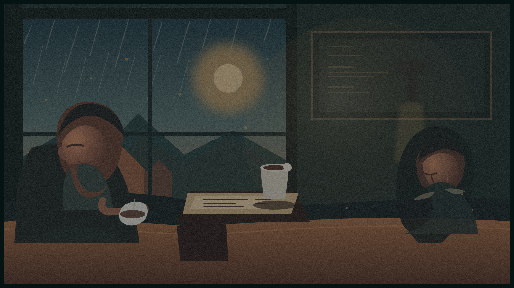

演示场景
你周末还会去那家旧书店闲逛吗？
00:00 / 01:36
在剧情里发现、理解、记住那些真正值得学习的表达。
It's the only place where I can hear myself think.
The Long Way Home · S02 E04
《The Long Way Home》· S02 E04
让每一个值得记住的表达，
都留在它出现的语境里。
每个收藏都保留了原句、来源和那一刻的语境。
不追求背完，只把见过的表达再想起一次。
同一段剧情，不同水平的人应该看到不同的学习重点。
影响标注难度
影响推荐侧重
少而准，还是更丰富
保持画面干净